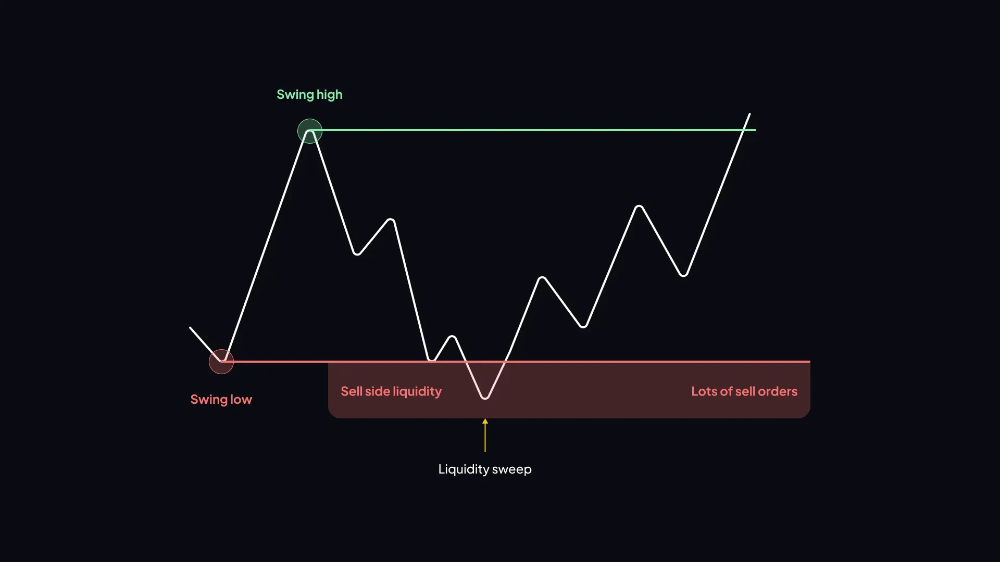
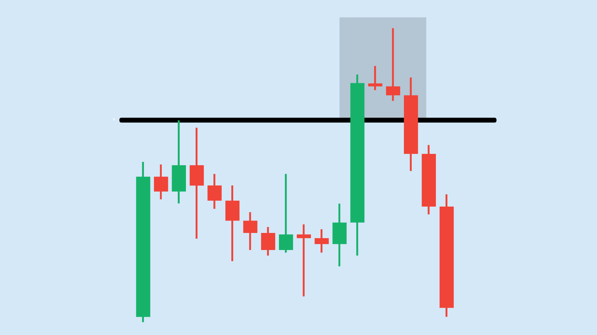

🎯 Complete Trading Strategies & Case Studies
Advanced strategy combinations, real chart examples, multiple setup types, and the complete toolbox for professional trading.
📋 Table of Contents
📊 Strategy Types Overview
Every trade falls into one of these categories:
🔓 Breakout
Price breaks a key level with momentum. Enter on break + retest.
📉 Pullback
Price retraces within a trend. Enter at support/OB during the pullback.
🔄 Reversal
Trend changes direction. Enter after MSS + confirmation at key level.
📏 Range
Price bounces between support and resistance. Buy low, sell high.
🔓 Breakout Strategy


When to Use:
- Price consolidates near resistance or support
- Volume builds before the breakout
- Higher timeframe trend aligns
Entry Rules:
- Wait for candle to close above/below the level
- Volume must confirm (higher than average)
- Enter on the retest of the broken level
Stop Loss:
- Below the breakout candle (for long)
- Above the breakout candle (for short)
Target:
- Measured move (height of the range)
- Next key level
- Minimum RR: 1:2
⚠ Beware fake breakouts! Always wait for close confirmation + volume.
📉 Pullback Strategy

When to Use:
- Clear trend established (HH/HL or LH/LL)
- Price pulls back to a key level
- Structure is intact
Entry Zones:
- Previous support turned resistance (or vice versa)
- Order Block zone
- Fair Value Gap
- 50% Fibonacci retracement
- Moving average (20/50 EMA)
Entry Confirmation:
- Bullish/bearish engulfing at the zone
- Rejection wick (hammer/shooting star)
- Volume spike at pullback level
Pullback trading is the safest strategy because you trade with the trend at a discount.
🔄 Reversal Strategy


When to Use:
- Price reaches major support/resistance
- Divergence on RSI or MACD
- Exhaustion candles appear
- Market structure shift confirmed
Confirmation Checklist:
- ✅ Liquidity grab at the extreme
- ✅ Market structure shift (MSS)
- ✅ Reversal candlestick pattern
- ✅ Volume confirmation
Reversals are higher risk. Use smaller position sizes and tighter stops.
📏 Range Trading Strategy

When to Use:
- No clear trend — price bounces between levels
- Equal highs and equal lows visible
- Market is in accumulation or distribution phase
Rules:
- Buy at support (bottom of range)
- Sell at resistance (top of range)
- Wait for rejection confirmation before entry
- Stop loss outside the range
- Target the opposite side of the range
⚠ Stop range trading when price breaks out. Switch to breakout strategy.
🔗 Combining Strategies
The best trades happen when multiple confluences align:
- Higher timeframe trend + lower timeframe entry
- Support/Resistance + Order Block
- FVG + 50% retracement
- Candlestick pattern + Volume spike
- PO3 model + MSS + OB entry
More confluences = Higher probability trade
📸 Real Chart Examples


Study these charts carefully. Identify the setup → entry → stop loss → target in each example.
📋 Common Setup Templates
Setup A — Trend + Pullback + OB
- Identify trend on 15m
- Wait for pullback to OB on 5m
- Enter with confirmation candle
- SL below OB, TP at previous high/low
Setup B — Liquidity Grab + MSS + FVG
- Mark previous high/low (liquidity)
- Wait for sweep + MSS
- Enter at FVG on pullback
- SL beyond sweep, TP at next liquidity zone
Setup C — PO3 Intraday
- Mark Asian session range
- Wait for manipulation (fake breakout)
- Confirm structure shift
- Enter pullback, ride distribution
Setup D — 4-Candle Reversal at Key Level
- Price reaches major S/R
- 4-candle reversal pattern forms
- Enter after candle 4 closes
- SL beyond candle 1, TP at 1:3 RR
🧠 Advanced Concepts
Multi-Timeframe Analysis
- Higher TF (1H/4H) → Determine bias (trend direction)
- Trading TF (15m) → Find setups
- Entry TF (5m/1m) → Precise entry
Session-Based Trading
- Asian Session → Accumulation (mark the range)
- London Session → Manipulation (stop hunts happen here)
- New York Session → Distribution (real moves begin)
Liquidity Concepts
- Buy-side liquidity = stops above highs
- Sell-side liquidity = stops below lows
- Price always seeks liquidity before trending
- Equal highs/lows = liquidity pools
Order Flow Basics
- Aggressive buying/selling at key levels
- Volume imbalance = institutional activity
- Absorption = large orders absorbing selling/buying pressure
📅 Daily Trading Routine
🌅 Pre-Market (Before Open):
- Check higher timeframe bias
- Mark key levels (S/R, previous H/L)
- Mark Asian session range
- Identify potential liquidity zones
- Select 2-5 instruments
📊 During Market:
- Wait for your setup — don't force trades
- Follow your checklist before entering
- Execute without hesitation once setup is valid
- Manage trades — partial profit + trail stop
- Max 3 stop losses per day → then STOP
📝 Post-Market:
- Record every trade in your journal
- Screenshot charts with annotations
- Note what went right and wrong
- Review weekly for patterns in your trading
❌ Top Trading Mistakes
- Trading without a plan
- Overtrading — taking too many trades
- Moving stop loss to avoid being stopped out
- Revenge trading after a loss
- Increasing position size after losses
- Not using a stop loss
- Trading every breakout (most are traps)
- Switching strategies too often
- Ignoring higher timeframe direction
- Trading based on emotions, not system
Every mistake costs money. Review this list before every trading day.
⭐ Final Master Checklist
Before every trade, check:
- ✅ Higher timeframe bias identified
- ✅ Key levels marked (S/R, OB, FVG)
- ✅ Price at a key location (not random)
- ✅ Setup confirmed (pattern + confirmation candle)
- ✅ Volume confirms the move
- ✅ Stop loss defined BEFORE entry
- ✅ Risk-Reward minimum 1:2
- ✅ Risk per trade ≤ 1-2% of capital
- ✅ Daily loss limit not reached
- ✅ No emotional decision — system-based only
Edge + Risk Management + Discipline + Consistency = Profitable Trader
Congratulations! 🎉
You have completed the full Trading Guide. Now practice, journal, and build your edge one trade at a time.
You have completed the full Trading Guide. Now practice, journal, and build your edge one trade at a time.